NG — Nigeria
The main impact of a 200 basis-point (2.00 percentage-point) rise in United States interest rates on Nigeria is a 0.039% drop in GDP by the 11th quarter — a minimal spillover. Nigeria ranks 20th by absolute GDP size in this set, and the model bands the response as minimal: the peak real GDP loss is under four-hundredths of a percent relative to baseline, far smaller than the equity and manufacturing responses that drive it. The shock is a single US monetary tightening; nothing else is active, so every path below is the isolated effect of higher US rates working through Nigerian financial conditions, competitiveness, and demand.
Demand and trade. Household consumption falls gradually, peaking at −0.017% in Q11 before turning positive by Q18 and ending Q20 at +0.010%. Private investment is hit harder and earlier, peaking at −0.097% in Q8, then recovering sharply to +0.069% by Q20 as the cost of capital eases. Net exports — this model's trade balance, with imports and exports not split — actually improve at first, +0.017% in Q1 and +0.022% in Q2, before deteriorating to a trough of −0.027% in Q15 and staying negative at −0.020% in Q20. Government spending is nearly flat, drifting from +0.0002% in Q1 to −0.006% by Q20, while government debt falls steadily to a trough of −0.050% in Q16, ending Q20 at −0.035%.
External / FX. Currency strength — the real exchange rate — appreciates sharply, peaking at +0.324% in Q8 and fading to +0.003% by Q20. That stronger currency lines up with the net-exports path: the early trade-balance gain fades as the real exchange rate appreciates, and net exports turn negative from Q10 onward, consistent with a loss of competitiveness.
Labour. Employment declines slowly, peaking at −0.018% in Q14 and still −0.004% below baseline at Q20. Unemployment rises by a peak of 0.0025 percentage points in Q12, then falls back to −0.0008 points by Q20. Real wages rise early — peaking at +0.023% in Q8 — before turning negative in Q13 and falling to −0.056% by Q20, the largest labour-market effect in the run.
Prices. CPI inflation rises 0.024 percentage points in Q1, fades by Q4, turns negative in Q9, and is essentially back to baseline (+0.0002 points) by Q20. Domestic inflation follows the same shape, peaking at +0.017 points in Q1 and fading to +0.0002 points by Q20. Firms' marginal cost falls to −0.023% in Q11, then recovers to +0.011% by Q20.
Financial conditions. The local policy rate initially rises +0.017 points in Q1, then falls to a trough of −0.044 points in Q14, ending Q20 at −0.010 points. Government 2-year yields dip to −0.037 points in Q11 before ending +0.008 points; 5-year yields trough at −0.015 points in Q6 and end +0.011 points; 10-year yields are nearly flat, ending +0.005 points in Q20. Bond prices fall to −0.117% in Q8, then swing positive to +0.111% by Q14, ending +0.024%. Equity prices are the largest single response, peaking at −0.402% in Q8 and recovering to +0.015% by Q20. Tobin's Q — the value of installed capital — falls to −0.068% in Q8 and ends +0.048%. House prices decline steadily to −0.033% in Q14, still −0.017% below baseline at Q20. Bank credit contracts to −0.006% by Q18, and lending spreads widen by a peak of 0.0009 percentage points in Q18.
Sectoral and capital. Manufacturing GDP is hit hardest of all output measures, −0.098% in Q8, recovering to +0.003% by Q20. Services GDP falls to −0.019% in Q11 and ends +0.009%. The capital stock dips only −0.004% at Q13 and remains −0.002% below baseline at Q20.
Timing. The GDP hit is largest in Q11 at −0.039%, and it has largely faded by Q17; the sign turns positive in Q18 and GDP ends Q20 at +0.018% above baseline. Equity and manufacturing peak earlier, in Q8, while consumption, services, and marginal cost peak in Q11 and labour-market effects peak in Q12–Q14.
Close. These are model impulse responses to a 200bp US rate rise, relative to a no-shock baseline — not forecasts. They describe the isolated transmission of US monetary tightening into Nigeria, and the minimal band reflects how small the GDP spillover is even as equity, manufacturing, and the real exchange rate move more visibly.
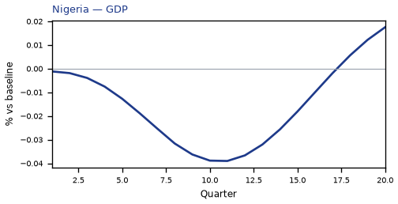
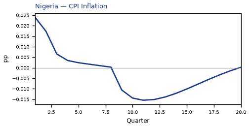
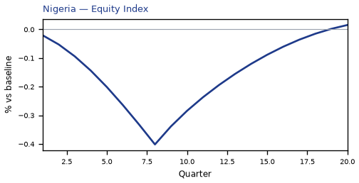
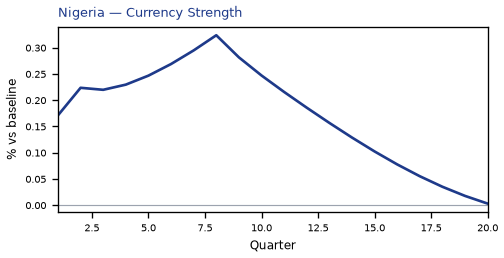
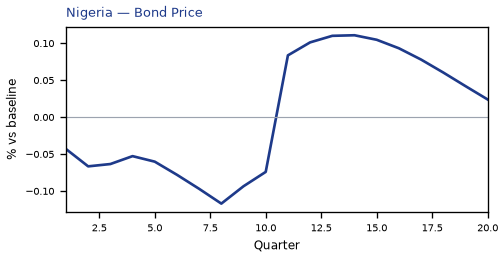
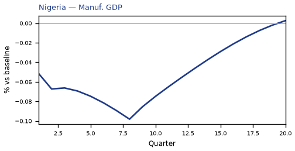
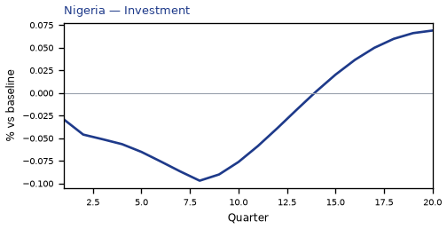
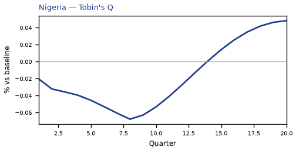
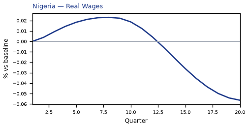
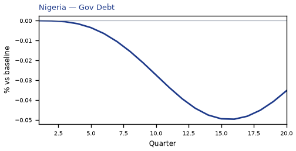

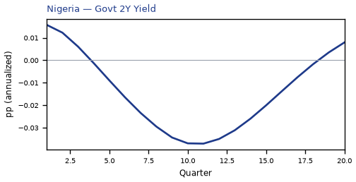
source=live · global_macro_v5 · contract v6 · Q1–Q20 JSON · not financial advice